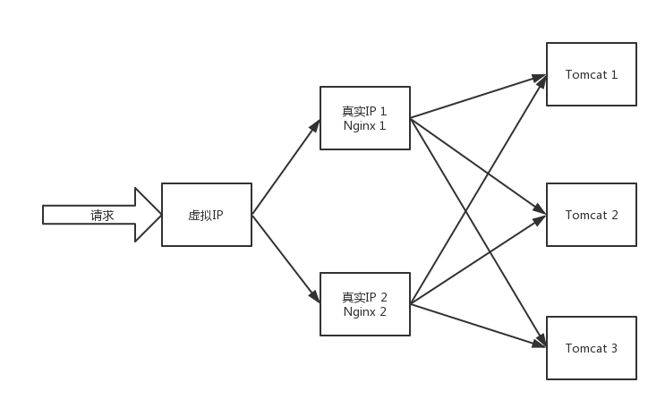
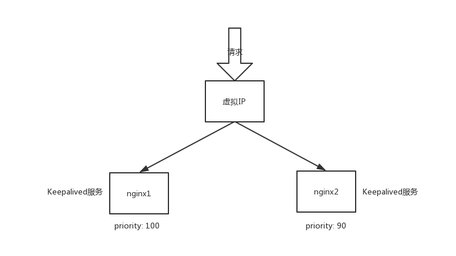

Nginx + Keepalived实现高可用
Keepalived简介
Keepalived是一个高性能的服务器高可用或热备解决方案，Keepalived主要来防止服务器单点故障的发生，可以通过与Nginx的配合实现web服务端的高可用。
Keepalived以VRRP协议为实现基础，用VRRP协议来实现高可用性(HA)。VRRP(Virtual Router Redundancy Protocol)协议是用于实现路由器冗余的协议，VRRP协议将两台或多台路由器设备虚拟成一个设备，对外提供虚拟路由器IP(一个或多个)，如下图所示：

Keepalived不仅能实现Nginx的高可用，还能实现Redis, Mysql等服务集群的高可用
VRRP工作机制
在一个VRRP虚拟路由器中，有多台物理的VRRP路由器，但是这多台的物理的机器并不能同时工作，而是由一台称为MASTER的负责路由工作，其它的都是BACKUP，MASTER并非一成不变，VRRP让每个VRRP路由器参与竞选，最终获胜的就是MASTER。MASTER拥有一些特权，比如，拥有虚拟路由器的IP地址，我们的主机就是用这个IP地址作为静态路由的。拥有特权的MASTER要负责转发发送给网关地址的包和响应ARP请求。
VRRP通过竞选协议来实现虚拟路由器的功能，所有的协议报文都是通过IP多播(multicast)包(多播地址224.0.0.18)形式发送的。虚拟路由器由VRID(范围0-255)和一组IP地址组成，对外表现为一个周知的MAC地址。所以，在一个虚拟路由 器中，不管谁是MASTER，对外都是相同的MAC和IP(称之为VIP)。客户端主机并不需要因为MASTER的改变而修改自己的路由配置，对客户端来说，这种主从的切换是透明的。
在一个虚拟路由器中，只有作为MASTER的VRRP路由器会一直发送VRRP通告信息(VRRPAdvertisement message)，BACKUP不会抢占MASTER，除非它的优先级(priority)更高。当MASTER不可用时(BACKUP收不到通告信息)， 多台BACKUP中优先级最高的这台会被抢占为MASTER。这种抢占是非常快速的(<1s)，以保证服务的连续性。由于安全性考虑，VRRP包使用了加密协议进行加密。
Keepalived工作原理

上图显示了一个应用场景，Keepalived虚拟出一个虚拟设备，该设备对外暴露IP；有两个nginx提供反向代理和负载均衡服务；在每台nginx服务器的物理机上都运行Keepalived服务。
我们假设nginx1是主节点，叫做MASTER；nginx2是备份节点，叫做BACKUP。
下面分别是Keepalived在MASTER和BACKUP的配置文件，读懂了配置文件也就大致清楚了Keepalived的工作原理。
首先是MASTER节点：
然后是BACKUP节点：
最后是nginx_check.sh脚本：
再来看一遍这张图：
初始时刻MASTER的优先级是100，BACKUP是90，因此Keepalived会把到来的请求打到优先级大的机器上，也就是打到MASTER上。与此同时，Keepalived会每隔2秒执行一次指定的脚本，即nginx_check.sh脚本，这个脚本首先计算机器中nginx进程的数量，如果数量等于0，说明这台物理机上nginx挂掉了，那么尝试启动nginx，休眠2秒钟之后，再次统计nginx进程数量，如果数量依然是0，说明启动nginx不成功，那么就把该物理机上的Keepalived服务杀掉。如果MASTER上的nginx挂掉且启动失败，那么根据配置文件中的weight值是-20，把MASTER的priority值减去20结果等于80。根据VRRP协议，MASTER要定时向所有BACKUP发送VRRP通告信息，由于MASTER上的Keepalived服务被杀掉了，无法发送VRRP通告，收不到通告的BACKUP会接管虚拟IP，也就是实现了主从切换，在这里就是由nginx2取代了nginx1。
最后说明一点
Keepalived还可以实现mysql，redis等集群的高可用，配置与nginx类似，不同的是执行的脚本不同。比如mysql，每隔2秒执行一次mysql_check.sh脚本，脚本的大致流程就是检查mysql服务是否挂掉了，挂掉了就尝试启动，启动不了就杀掉Keepalived服务，根据VRRP协议实现主从切换，都是类似的。